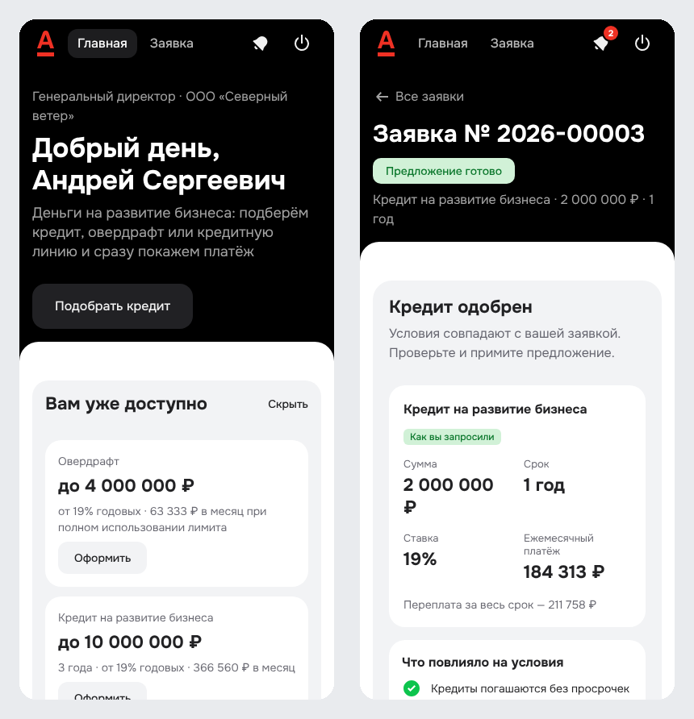
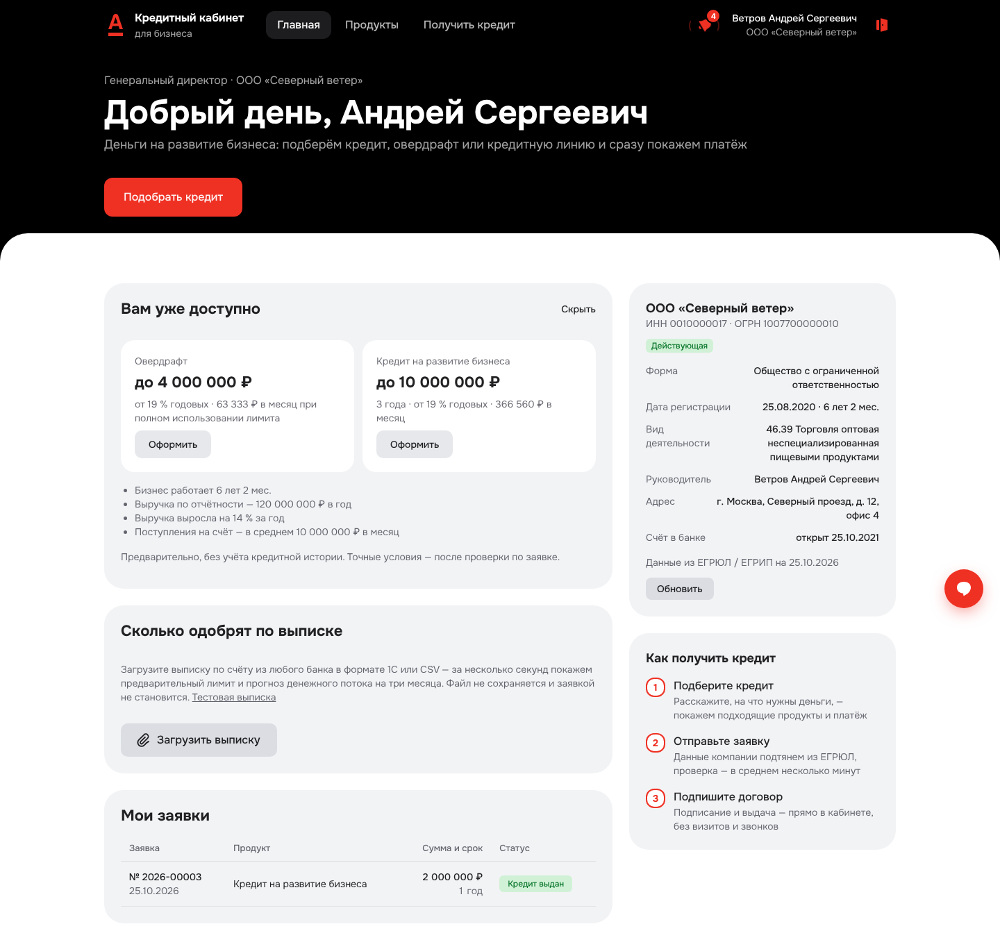
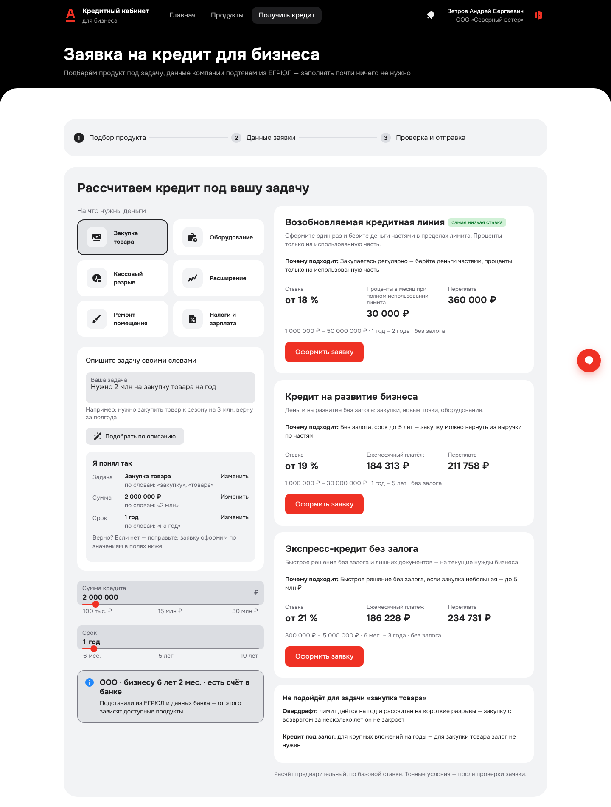
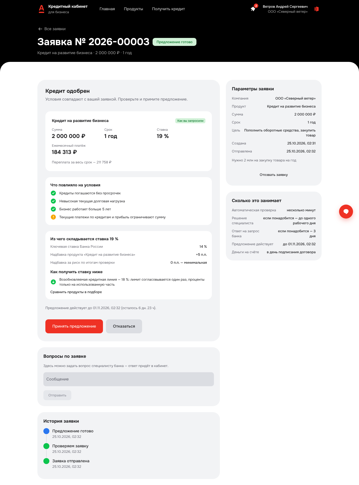
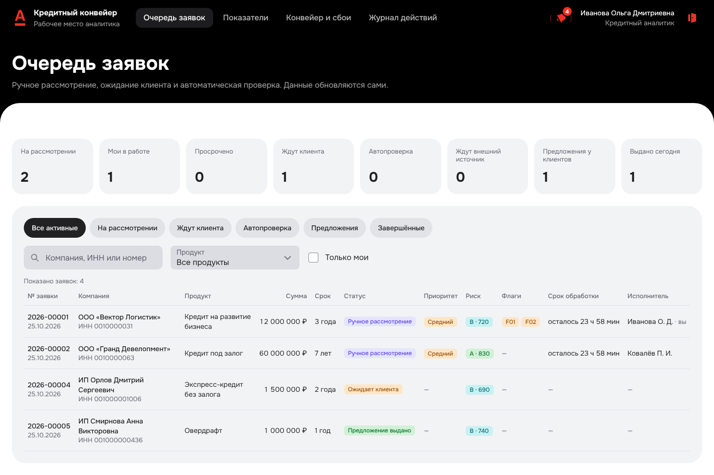
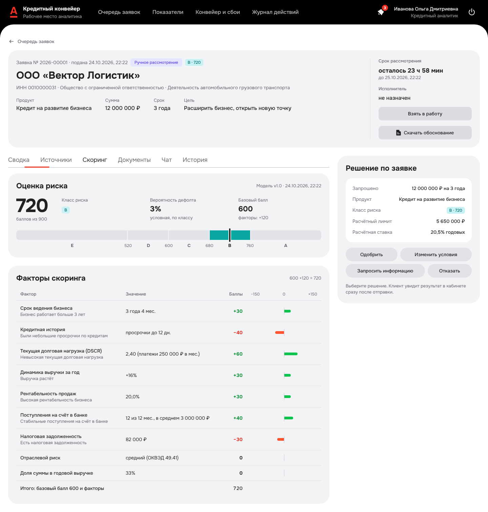
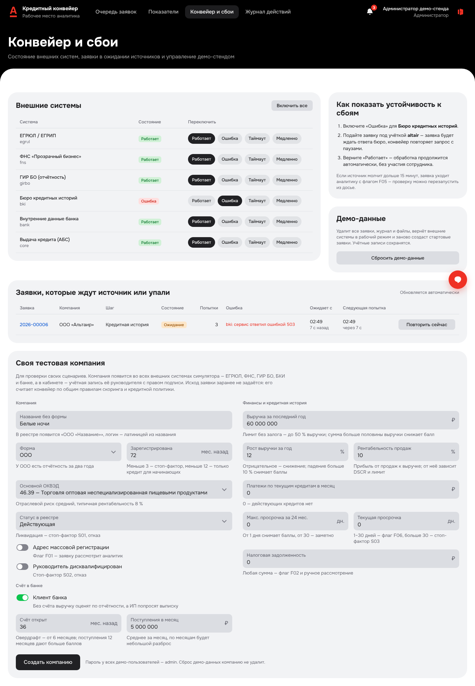

млн ₽
на месяца
Средняя онлайн-заявка бизнеса: суммы от сотен тысяч до десятков миллионов, а не крупные сделки под залог
Банки.ру, статистика заявок за I квартал 2026
Кабинет клиента малого бизнеса и рабочее место кредитного аналитика, связанные одним кредитным конвейером: от задачи бизнеса до выдачи кредита
stonebridgeway и команда «Альфы»

Проблема
Средняя онлайн-заявка бизнеса: суммы от сотен тысяч до десятков миллионов, а не крупные сделки под залог
Банки.ру, статистика заявок за I квартал 2026
После подачи заявки клиент не мог завершить оформление сам — только ждать
Отзыв об Альфа-Банке, март 2025
Документы приходится заново отправлять в разные подразделения банка
Отзыв о МСП Банке, апрель 2025
Вывод: быстрый ответ не решает проблему, если за ним — ожидание менеджера без сроков. Нужно в любой момент видеть, что с заявкой, чего не хватает и что банк уже решил.
Пользователи
Собственник, директор, финансовый директор или бухгалтер ООО либо ИП
Главный вопросСколько реально одобрят, под какую ставку и когда деньги будут на счёте
Разбирает заявки, которые не решились автоматически
ЗадачаПринять обоснованное решение быстро и в пределах полномочий
Руководитель процесса и администратор
ЗадачаМасштабировать выдачи без роста риска и ручного труда
Исследование
Кабинетное исследование по открытым источникам на октябрь 2026 года и первое интервью
После заявки клиент неделями ждёт звонка менеджера
→Статус по этапам обновляется сам, сроки и «что нужно от вас» — на экране
Документы отправляют повторно в разные подразделения
→Единое досье: реквизиты из реестров, документы в одном месте
Одобряют меньше, чем просили, и не объясняют почему
→Контрпредложение с вариантами и блоком «Что повлияло»
Непонятно, сколько одобрят и сколько это будет стоить
→Платёж и переплата до заявки, «Сколько одобрят по выписке»
Интервью: главное — ставка. Чем меньше ставка, тем больше он мне интересен
Продукты — от меньшей ставки к большей, ставка разложена на слагаемые
Не подтвердился спрос на подбор по описанию своими словами. Поэтому главный вход в подбор — карточки задач, а описание — по желанию.
Решение
своими словами или карточкой
из : ставка, платёж и переплата
данные компании — из реестров
автоматически: , скоринг и политика
как запросили или контрпредложение с вариантами
досье и решение в пределах полномочий
причина простыми словами и альтернативы
перечень и срок ответа, затем проверка продолжается
в кабинете, без визита в офис
деньги на счёте, график платежей
Статус меняется на экране в реальном времени, без звонков. Весь путь на стенде — .
Кабинет клиента


Решение для клиента

Из чего складывается ставка — пример с экрана
Баллы и класс риска клиенту не показываем — их видит аналитик.
Рабочее место банка
Очередь заявок

Досье заявки: оценка риска и решение

Кредитный конвейер
Конвейер и сбои: сбой БКИ включён для показа

Архитектура
клиент, аналитик, администратор
nginx: React и прокси /api
FastAPI: REST, SSE, PDF
открытые веса, необязательно
данные, очередь заданий, события, журнал
конвейер: шаги, повторы, таймеры
ЕГРЮЛ/ЕГРИП, ФНС, ГИР БО, БКИ, банк, АБС
Замер на стенде: одновременно
Безопасность и качество
ИИ — по делу
Клиент пишет своими словами«Нужно 3 млн на закупку товара к сезону, верну за 2 года»
→«Я понял так» показывает, по каким словам это найдено
Сверились с пятью принципами Кодекса этики в сфере ИИ на финансовом рынке Банка России — как выполняется каждый, описано в docs/ai.md
Эффект для банка
«Было» — допущения из открытых источников. «Стало» — то, что уже считает страница «Показатели» на синтетических данных стенда: механика подсчёта, а не прогноз портфеля.
| Показатель | Было — допущение | Стало — считает стенд |
|---|---|---|
| Доля автоматических решений | %: каждую заявку рассматривает сотрудник | из компаний демо-набора решаются без аналитика; набор показывает все исходы, поэтому это не прогноз |
| От отправки до решения | от недели ожидания звонка до месяца до предварительного одобрения — по отзывам | медиана с, 95 % — с при одновременно |
| Конверсия «предложение → принято» | не измеряется: отказ бинарный, клиент уходит | считается, включая контрпредложения, — показатель для пилота |
| Время аналитика на заявку | нет данных в открытых источниках, замер до пилота | медиана рассмотрения и просрочки срока — на странице «Показатели» |
Экономия времени аналитика = число автоматических решений × время на типовую заявку. Это формула, а не цифра: число появится в пилоте.
Как проверить
Затем откройте http://localhost:8080
| veter | клиент: автоодобрение, подписание и выдача |
| analyst | аналитик: очередь, досье, решение |
| admin | администратор: сбои внешних систем, сброс данных |
Пароль у всех — admin. Всего со своими сценариями — в README
Демо-версия: stonebridgeway.github.io/alfa-hakaton
github.com/stonebridgeway/alfa-hakaton — и PDF на